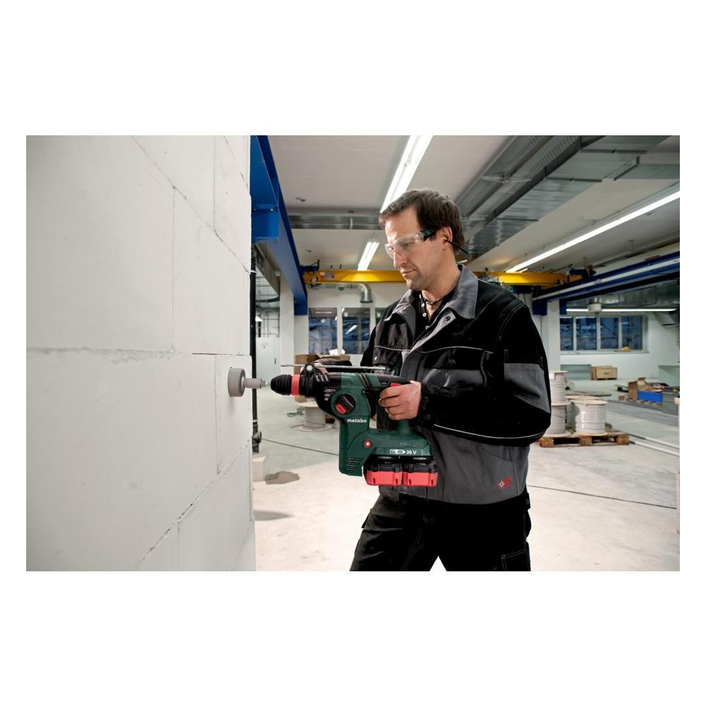
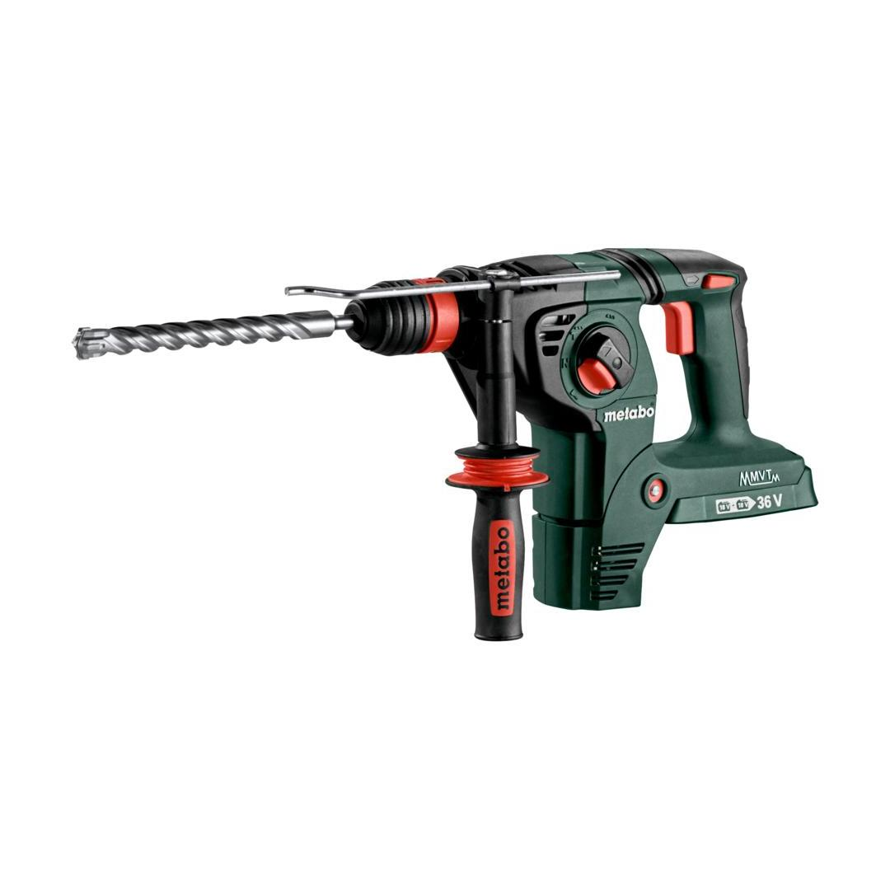

600796840




| Battery voltage | 18 V |
| Max. single blow energy (EPTA) | 3.1 J |
| Maximum impact rate | 4500 bpm |
| Drill-Ø concrete with hammer drills | 32 mm / 1 1/4 " |
| Tool holder | SDS-plus |
hammer drilling, drilling and chiselling
Metabo VibraTech (MVT)vibration damping for convenient continuous mode
Metabo quick changeof bit retainer and accessory, ideal for alternating applications and providing maximum flexibility.
CAS, the multi-brand battery system100% compatibility of machine, battery packs and chargers of one volt class – from Metabo and other brands. Discover now at www.cordless-alliance-system.com
Metabo S-automatic safety clutchmechanical decoupling of the drive for safe working should the tool stop unexpectedly
play video| Battery voltage | 18 V |
| Max. single blow energy (EPTA) | 3.1 J |
| Maximum impact rate | 4500 bpm |
| Drill-Ø concrete with hammer drills | 32 mm / 1 1/4 " |
| Drill-Ø masonry with core bits | 68 mm / 2 11/16 " |
| Drill Ø steel | 13 mm / 1/2 " |
| Drill-Ø soft wood | 30 mm / 1 3/16 " |
| No-load speed | 0 - 1100 rpm |
| Tool holder | SDS-plus |
| Weight without battery pack | 3.8 kg / 8.4 lbs |
| Weight with battery pack | 5.1 kg / 11.2 lbs |
| Hammer drilling concrete | 13 m/s² |
| Uncertainty of measurement K | 1.5 m/s² |
| Chiseling | 10.5 m/s² |
| Uncertainty of measurement K | 1.5 m/s² |
| Sound pressure level | 91 dB(A) |
| Sound power level (LwA) | 99 dB(A) |
| Uncertainty of measurement K | 3 dB(A) |
| Hammer chuck for tools with SDS-plus shank end |
| Keyless chuck for tools with cylindrical shank |
| Metabo VibraTech (MVT) side handle |
| Drilling depth guide |
| metaBOX 165 L |
| without battery pack, without charger |